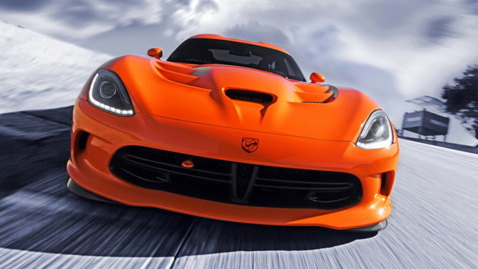

Între 7 şi 17 martie 2013 va avea loc ”salonul auto al primăverii”, după cum mai este cunoscut metaforic Salonul Auto de la Geneva. Un salon care speră să aducă din nou speranţa în lumea auto europeană, lovită de o criză auto foarte gravă. Aici găsiţi toate premierele şi noutăţile de la Salonul Auto Geneva 2013.
Cea de-a 83-a ediţie a salonului auto elveţian, Salonul Auto Geneva 2013, se va desfăşura sub egida ”inovaţiei şi respectului faţă de mediul înconjurător”, deci se anunţă o pleiadă de noutăţi ecologice.
Tot la Geneva 2013, în avanpremiera deschiderii oficiale, pe 4 martie, va fi decis modelul câştigător al premiului Maşina Anului 2013 în Europa .

Cei de la Dodge nu au odihnă în încercarea de a se ridica peste rivalii de la Chevrolet şi lansează o ediţie specială pentru sportiva Viper, botezată Time Attack, ce aduce o serie de schimbări consistente.
Viper TA, sau Time Attack a primit arme noi pentru a face faţă luptei cu Chevrolet Corvette. Discurile de frână mai mari, semnate de Brembo, pachetul de caroserie Aero din fibră de carbon şi eleronul proeminent sunt principalele modificări atunci când vine vorba de Viper TA, care promite să ia cu asalt circuitele.
Datorită folosirii fibrei de carbon,Viper-ul este acum mai uşor şi atinge 100 km/h în 3,3 secunde şi poate parcurge sfertul de milă în 11,3 secunde cu o viteză de 210 km/h. Este destul de bun pentru a se bate cu Corvette ZR1? Asta decideţi voi, după ce vedeţi cum se comportă Viper Time Attack pe circuit, în materialul video.
Guvernul a publicat Ordonanţa de Urgenţă 9/2013, privind noua taxă auto 2013. Aşadar, din 15 martie 2013 la birourile administraţiilor financiare din ţară se va plăti timbrul de mediu 2013 după noua formulă de calcul, pe care o regăsiţi mai jos.
Noua taxă auto 2013, a cărei denumire a fost schimbată înTimbrul de Mediu 2013, a intrat oficial în vigoare din 15 martie 2013, urmând a se aplica tuturor maşinilor noi şi second-hand care se comercializează în România.
Faţă de vechea formulă a taxei de poluare, noul timbru de mediu 2013 se calculează diferit în funcţie de motorizarea maşinilor, cele cu motoare diesel fiind taxate mai scump decât cele pe benzină.
Noul timbru de mediu readuce în actualitate şiplata la noua înmatriculare a maşinilor second hand înmatriculate înainte de 2007 şi pentru care nu s-a plătit taxa auto la momentul primei înmatriculări.
În cazul timbrului de mediu, se observă o reducere a taxei pentru maşinile mai vechi, având norme de poluare Euro 2, Euro 1 şi non-Euro, acestea având cuantumul taxei auto mai redus decât în cazul taxei de poluare din 2012. Maşinile electrice, hibride şi care sunt conforme viitoarelor norme de poluare Euro 6 sunt degrevate de la plata timbrului de mediu 2013.